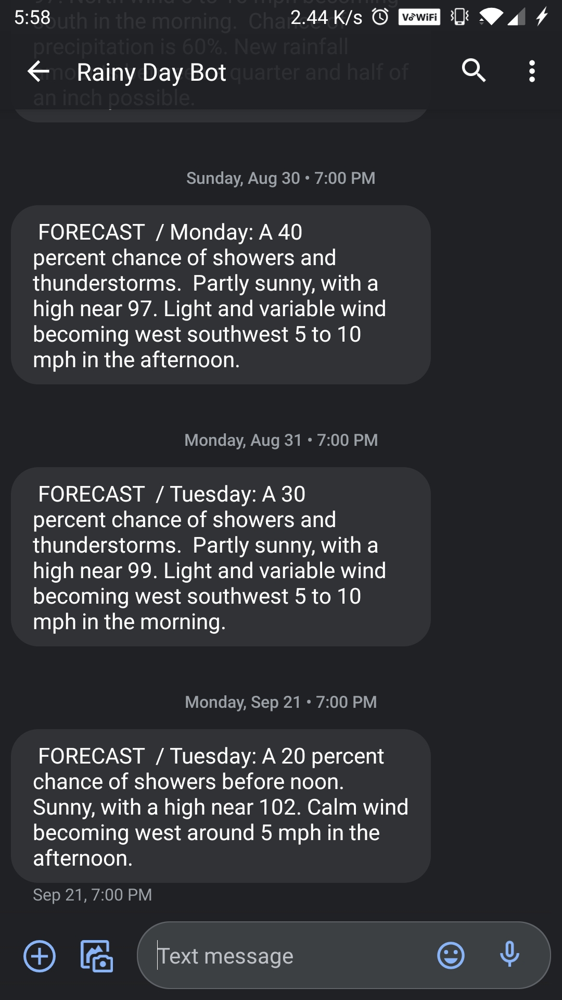

This project is a pretty small one, but it's something that I still run because of how useful it is to me.
In the future I may upgrade this project by turning it into an app so it works off of phone location, but even in its current state it provides me a lot of utility.
The code is pretty short and pretty straight forward. We start by setting the website link for the city we want to monitor, this is the area for my university.
Next we download the HTML content into an object and use a parser to split it into elements, I did this with the BeautifulSoup4 Python module.
From here we find the 7 day forecast item, and move along its elements until we reach the one for tomorrow.
# get the list of forecast items
seven_day = soup.find(id="seven-day-forecast")
forecast_items = seven_day.find_all(class_="tombstone-container")
# move along until we find the correct item
for element in forecast_items:
# get short description for the forecast
period = element.find(class_="period-name").get_text()
short_desc = element.find(class_="short-desc").get_text()
# break if the item is the one we want
if (short_desc != "Excessive Heat Warning") and (period != "Tonight"):
break
Once we've found the correct element, I extract the full forecast.
This is a string that contains some unwanted information, so I manullay parse it for the forecast description.
The description lies within the first pair of quotation marks, so I use the following code to extract it.
# REFORMAT DESCRIPTION
# ---------------------
forecast = ""
quotes = 0
# the description we want is between quotes, this extracts it
for char in str(description):
if quotes == 2:
break
if char == "\"":
quotes += 1
elif quotes == 1:
forecast += char
From here, all that I need to do is send a text message if there is a chance of rain.
Doing this involves making a MIME Multipart message and using smtplib to run an email server from my computer.
if ("rain" in forecast) or ("shower" in forecast):
# used soon to login to server
email = "email goes here"
password = "password goes here"
# this is for t-mobile, different carriers use something different
sms_gateway = 'phonenumberhere@tmomail.net'
# server for sending text over email
smtp = "smtp.gmail.com"
port = 587
# start server and login
server = smtplib.SMTP(smtp, port)
server.starttls()
server.login(email, password)
# prepare mail fields
message = MIMEMultipart()
message['From'] = email
message['To'] = sms_gateway
# subject line and body
message['Subject'] = "FORECAST \n"
body = forecast + "\n"
# we're just sending plain text, attach it to message
message.attach(MIMEText(body, 'plain'))
# send the text over email
server.sendmail(email, sms_gateway, message.as_string())
# quit the server
server.quit()
There you have it, in just a few steps I was able to get the forecast from the national weather service and send it to myself over text.
I created a .bat file to run this program, and I use the Windows Task Scheduler to run it at the same time every night.
If you would like to view the entire code, check it out on Github here.
You can see a screenshot of my messages from the bot below.
